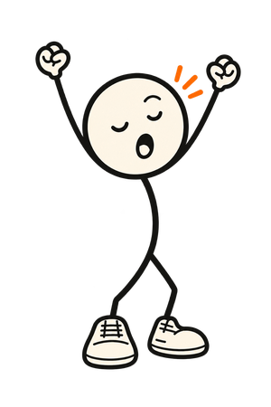

7:10Kitchen, kettle on
What's on today?
YouMorning, Doddy. What's on today?
DoddyDentist at 15:30. And Ola's birthday is tomorrow.
Doddy reads your iPhone calendar and the birthdays on your contact cards. It adds the reminder only if you say yes.
Reminders
Remind you to get Ola a card?
Today at 17:00, when you're near the shops.
Set
Today, 17:00: get Ola a card.
Nothing changed. Doddy lets it go.
